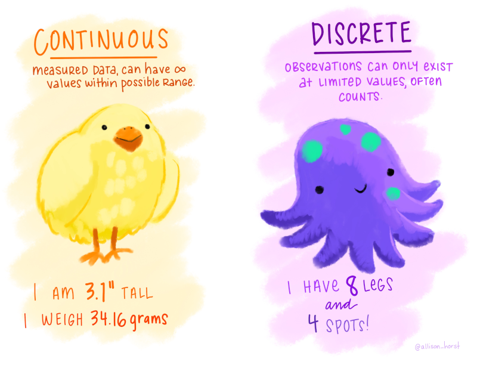
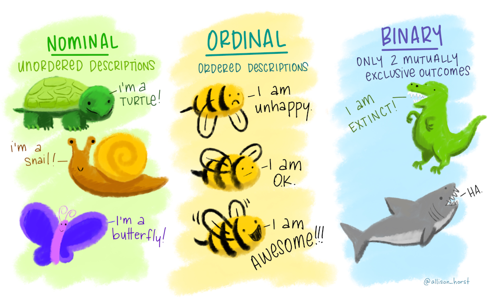
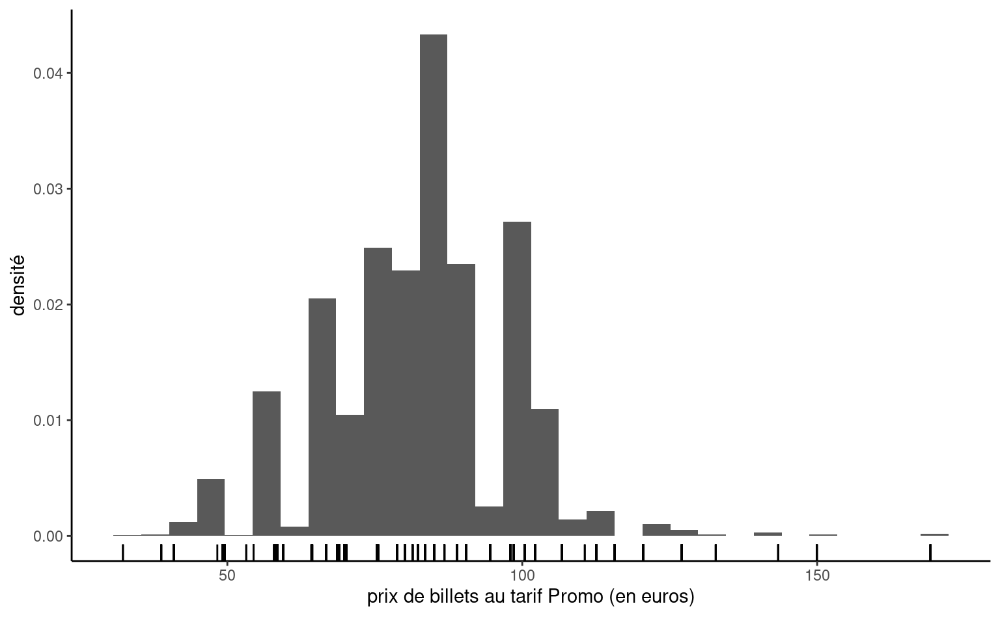
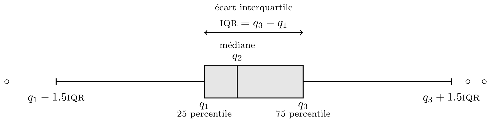

L’analyse exploratoire, comme son nom l’indique, est une étape préliminaire à la modélisation servant à l’acquisition d’une meilleure compréhension des données. L’analyse exploratoire sert à nous assurer que notre analyse ou notre traitement de ces dernières est cohérent. Le but de l’analyse exploratoire graphique est d’extraire des informations utiles, le plus souvent par le biais d’une série de questions qui sont raffinées au fur et à mesure que progresse l’analyse. On s’intéresse particulièrement aux relations et interactions entre différentes variables et la distribution empirique de chaque variable. Les étapes majeures sont:
Formuler des questions sur les données
Chercher des réponses à ces questions à l’aide de statistiques descriptives, de tableaux de fréquence ou de contingence et de graphiques.
Raffiner nos questions, et utiliser les trouvailles pour peaufiner notre analyse
Dans un rapport, un résumé des caractéristiques les plus importantes devrait être inclut pour que le lecteur ou la lectrice puisse valider son interprétation des données.
Généralement, l’analyse exploratoire sert aussi à vérifier
que les variables catégorielles sont adéquatement traitées comme des facteurs (factor).
que les valeurs manquantes sont adéquatement déclarées comme telles (code d’erreur, 999 ou \(-1\), etc.)
s’il ne vaudrait mieux pas retirer certaines variables explicatives avec beaucoup de valeurs manquantes.
s’il ne vaudrait mieux pas fusionner des modalités de variables catégorielles si le nombre d’observation par modalité est trop faible.
qu’il n’y a pas de variable explicative dérivée de la variable réponse (dans le cas d’une régression)
que le sous-ensemble des observations employé pour l’analyse statistique est adéquat.
qu’il n’y a pas d’anomalies ou de valeurs aberrantes (par ex., 999 pour valeurs manquantes) qui viendraient fausser les résultats.
2.1 Types de variables
Une variable représente une caractéristique de la population d’intérêt, par exemple le sexe d’un individu, le prix d’un article, etc.
une observation, parfois appelée donnée, est un ensemble de mesures collectées sous des conditions identiques, par exemple pour un individu ou à un instant donné.
Le choix de modèle statistique ou de test dépend souvent du type de variables collectées. Les variables peuvent être de plusieurs types: quantitatives (discrètes ou continues) si elles prennent des valeurs numériques, qualitatives (binaires, nominales ou ordinales) si elles sont décrites par un adjectif; je préfère le terme catégorielle, plus évocateur.


Figure 2.1: Illustrations par Allison Horst de variables numériques (gauche) et catégorielles (droite).
On distingue deux types de variables quantitatives:
une variable discrète prend un nombre dénombrable de valeurs; ce sont souvent des variables de dénombrement ou des variables dichotomiques.
une variable continue peut prendre (en théorie) une infinité de valeurs, même si les valeurs mesurées sont arrondies ou mesurées avec une précision limitée (temps, taille, masse, vitesse, salaire). Dans bien des cas, nous pouvons considérer comme continues des variables discrètes si elles prennent un assez grand nombre de valeurs.
Les variables catégorielles représentent un ensemble fini de possibilités. On les regroupe en deux types, pour lesquels on ne fera pas de distinction:
nominales s’il n’y a pas d’ordre entre les modalités (sexe, couleur, pays d’origine) ou
ordinale (échelle de Likert, tranche salariale).
La codification des modalités des variables catégorielle est arbitraire; en revanche, on préservera l’ordre lorsqu’on représentera graphiquement les variables ordinales. Lors de l’estimation, chaque variable catégorielle doit est transformée en un ensemble d’indicateurs binaires: il est donc essentiel de déclarer ces dernières dans votre logiciel statistique, surtout si elles sont encodées dans la base de données à l’aide de valeurs entières.
2.2 Validation des données.
Avant de regarder les données, il est souvent utile de se plonger dans la description de la base de données. Il n’est pas rare que cette dernière contienne des informations pertinentes sur la codification des données, par exemple
telle variable catégorielle est stockée avec des valeurs entières et les étiquettes ne sont disponibles que dans la description.
des valeurs manquantes sont encodées avec \(-1\) (pour les variables positives) ou \(999\).
une variable est une fonction, transformation ou combinaison d’autres variables.
2.3 Graphiques
Le principal type de graphique pour représenter la distribution d’une variable catégorielle est le diagramme en bâtons, dans lequel la fréquence de chaque catégorie est présentée sur l’axe des ordonnées (\(y\)) en fonction de la modalité, sur l’axe des abscisses (\(x\)), et ordonnées pour des variables ordinales. Cette représentation est en tout point supérieur au diagramme en camembert, une engeance répandue qui devrait être honnie (notamment parce que l’humain juge mal les différences d’aires, qu’une simple rotation change la perception du graphique et qu’il est difficile de mesurer les proportions) — ce n’est pas de la tarte!
Code
library(ggplot2)library(patchwork)library(dplyr)data(renfe, package ="hecmodstat")g1 <- renfe |>count(classe) |>mutate(classe = forcats::fct_reorder(classe, n)) |>ggplot(mapping =aes(y = classe, x = n)) +geom_col() +labs(subtitle ="classe", x ="dénombrement", y ="")g2 <- renfe |>count(type) |>mutate(type = forcats::fct_reorder(type, n)) |>ggplot(mapping =aes(y = type, x = n)) +geom_col() +labs(subtitle ="type de train", x ="dénombrement", y ="")g1 + g2
Figure 2.2: Diagramme en bâtons pour la classe des billets de trains du jeu de données Renfe.
Puisque les variables continues peuvent prendre autant de valeurs distinctes qu’il y a d’observations, on ne peut simplement compter le nombre d’occurrence par valeur unique. On regroupera plutôt dans un certain nombre d’intervalle, en discrétisant l’ensemble des valeurs en classes pour obtenir un histogramme. Le nombre de classes dépendra du nombre d’observations si on veut que l’estimation ne soit pas impactée par le faible nombre d’observations par classe: règle générale, le nombre de classes ne devrait pas dépasser \(\sqrt{n}\), où \(n\) est le nombre d’observations de l’échantillon. On obtiendra la fréquence de chaque classe, mais si on normalise l’histogramme (de façon à ce que l’aire sous les bandes verticales égale un), on obtient une approximation discrète de la fonction de densité. Faire varier le nombre de classes permet parfois de faire apparaître des caractéristiques de la variable (notamment la multimodalité, l’asymmétrie et les arrondis).
Puisque qu’on groupe les observations en classe pour tracer l’histogramme, il est difficile de voir l’étendue des valeurs que prenne la variable: on peut rajouter des traits sous l’histogramme pour représenter les valeurs uniques prises par la variable, tandis que la hauteur de l’histogramme nous renseigne sur leur fréquence relative.
Code
renfe |>subset(tarif =="Promo") |>ggplot(aes(x = prix)) +geom_histogram(aes(y =after_stat(density)), bins =30) +geom_rug(sides ="b") +labs(x ="prix de billets au tarif Promo (en euros)", y ="densité")

Figure 2.3: Histogramme du prix des billets au tarif Promo de trains du jeu de données Renfe
Une boîte à moustaches représente graphiquement cinq statistiques descriptives.
La boîte donne les 1e, 2e et 3e quartiles \(q_1, q_2, q_3\). Il y a donc 50% des observations sont au-dessus/en-dessous de la médiane \(q_2\) qui sépare en deux la boîte.
La longueur des moustaches est moins de \(1.5\) fois l’écart interquartile \(q_3-q_1\) (tracée entre 3e quartile et le dernier point plus petit que \(q_3+1.5(q_3-q_1)\), etc.)
Les observations au-delà des moustaches sont encerclées. Notez que plus le nombre d’observations est élevé, plus le nombres de valeurs extrême augmente. C’est un défaut de la boîte à moustache, qui a été conçue pour des jeux de données qui passeraient pour petits selon les standards actuels.

Figure 2.4: Boîte à moustache.
On peut représenter la distribution d’une variable réponse continue en fonction d’une variable catégorielle en traçant une boîte à moustaches pour chaque catégorie et en les disposant côte-à-côte. Une troisième variable catégorielle peut être ajoutée par le biais de couleurs, comme dans la Figure 2.5.
Code
renfe |>subset(tarif =="Promo") |>ggplot(aes(y = prix, x = classe, col = type)) +geom_boxplot() +labs(y ="prix (en euros)", col ="type de train") +theme(legend.position ="bottom")
Figure 2.5: Boîte à moustaches du prix des billets au tarif Promo en fonction de la classe pour le jeu de données Renfe.
Si on veut représenter la covariabilité de deux variables continues, on utilise un nuage de points où chaque variable est représentée sur un axe et chaque observation donne la coordonnée des points. Si la représentation graphique est dominée par quelques valeurs très grandes, une transformation des données peut être utile: vous verrez souvent des données positives à l’échelle logarithmique.
Plutôt que de décrire plus en détail le processus de l’analyse exploratoire, on présente un exemple qui illustre le cheminement habitue sur les données de trains de la Renfe introduites précédemment.
2.4 Exemple
La première étape consisterait à lire la description de la base de données. Le jeu de données renfe contient les variables suivantes:
prix: prix du billet (en euros);
dest: indicateur binaire du trajet, soit de Barcelone vers Madrid (0) ou de Madrid vers Barcelone (1);
tarif: variable catégorielle indiquant le tarif du billet, un parmi AdultoIda, Promo et Flexible;
classe: classe du billet, soit Preferente, Turista, TuristaPlus ou TuristaSolo;
type: variable catégorielle indiquant le type de train, soit Alta Velocidad Española (AVE), soit Alta Velocidad Española conjointement avec TGV (un partenariat entre la SNCF et Renfe pour les trains à destination ou en provenance de Toulouse) AVE-TGV, soit les trains régionaux REXPRESS; seuls les trains étiquetés AVE ou AVE-TGV sont des trains à grande vitesse.
duree: longueur annoncée du trajet (en minutes);
jour entier indiquant le jour de la semaine du départ allant de dimanche (1) à samedi (7).
Il n’y a pas de valeurs manquantes et un aperçu des données (head(renfe)) montre qu’elles sont en format long, ce qui veut dire que chaque ligne contient une seule valeur pour la variable réponse, ici le prix d’un billet de train. On entame l’analyse exploratoire avec des questions plutôt vagues, par exemple
Quels sont les facteurs déterminant le prix et le temps de parcours?
Est-ce que le temps de parcours est le même peut importe le type de train?
Quelles sont les caractéristiques distinctives des types de train?
Quelles sont les principales différences entre les tarifs?
À l’exception de prix et de duree, toutes les variables explicatives sont catégorielles. La variable jour prends des valeurs entre 1 et 7; s’en souvenir pour éviter les mauvaises surprises ultérieures. En analysant le nombre de trains dans les catégories, on remarque qu’il y a autant de billets de type REXPRESS que le nombre de billets au tarif AdultoIda. On peut faire le décompte par catégorie avec un tableau de contingence, qui compte le nombre respectif dans chaque sous-catégorie. Dans la base de données Renfe, tous les billets pour les RegioExpress sont vendus au tarif AdultoIda en classe Turista. Le nombre de billets est minime, à peine 397 sur 10000. Cela suggère une nouvelle question: pourquoi ces trains sont-ils si peu populaires?
On remarque également que seulement 17 temps de parcours sont affichés sur les billets. On peut donc penser que la durée affichée sur le billet (en minutes) est le temps de trajet annoncé. La majeure partie (15 sur 17) des temps de parcours sont sous la barre des 3h15, hormis deux qui dépassent les 9h! Selon Google Maps, les deux villes sont distantes de 615km par la route, 500km à vol d’oiseau. Cela implique que, vraisemblablement, certains trains dépassent les 200km/h, tandis que d’autres vont plutôt à 70km/h. Quels sont ces trains plus lent? La variable type codifie probablement ce fait, et permet de voir que ce sont les trains RegioExpress qui sont dans cette catégorie.
Aller de Madrid à Barcelone à l’aide d’un train régulier prend 18 minutes de plus. Avec plus de 9h de trajet, pas étonnant donc que ces billets soient peu courus. Encore plus frappant, on note que le prix des billets est fixe: 43.25 euros peu importe que le trajet soit aller ou retour. C’est probablement la trouvaille la plus importante jusqu’à maintenant, car les billets de train de type RegioExpress ne forment pas un échantillon: il n’y a aucune variabilité! On aurait également pu découvrir cette anomalie en traçant une boîte à moustaches du prix en fonction du type de train.
Code
ggplot(data = renfe, mapping =aes(x = type, y = prix, col = dest)) +geom_boxplot() +labs(y ="prix (en euros)",x ="type de train",color ="destination") +theme(legend.position ="bottom")
Figure 2.6: Boîte à moustaches du prix de billets de train de Renfe en fonction de la destination et du type de train.
On pourrait soupçonner que les trains étiquetés AVE sont plus rapides, sachant que c’est l’acronyme de Alta Velocidad Española, littéralement haute vitesse espagnole. Qu’en est-il des distinctions entre les deux types de trains étiquetés AVE? Selon le site de la SNCF, les trains AVE-TGV sont des partenariats entre la Renfe et la SNCF et effectuent des liaisons entre la France et l’Espagne.
Les prix sont beaucoup plus élevés, en moyenne plus de deux fois plus que les trains régionaux. Les écarts de prix importants (l’écart type est de 20 euros) indique qu’il y a peut-être d’autres sources d’hétérogénéité, mais on pourrait soupçonner que la Renfe pratique la tarification dynamique. Il y un seul temps de parcours prévu pour les trains AVE-TGV. On ne note pas de différence de prix notable selon la direction ou le type de train grande vitesse, mais peut-être que les tarifs ou la classe disponibles diffèrent selon que le train ou non est en partenariat avec la compagnie française.
On n’a pas encore considéré le tarif et la classe des billets, hormis pour les trains RegioExpress. On voit dans la Figure 2.8 une forte différente dans l’hétérogénéité des prix selon le tarif; le tarif Promo prend plusieurs valeurs distinctes, tandis que les tarifs AdultoIda et Flexible semblent ne prendre que quelques valeurs. La première classe (Preferente) est plus chère et il y a moins d’observations dans ce groupe. La classe Turista est la classe la moins dispendieuse et la plus populaire. TuristaPlus offre plus de confort, tandis que TuristaSolo permet d’obtenir un siège individuel.
Côté tarif, Promo et PromoPlus permette d’obtenir des rabais pouvant aller jusqu’à respectivement 70% et 65%. Les annulations et changements ne sont pas possibles avec Promo, mais disponibles avec PromoPlus moyennant une pénalité équivalent à 30-20% du prix du billet. Le tarif Flexible est disponible au même prix que les billets réguliers, avec des bénéfices additionnels.
Figure 2.7: Boîte à moustaches du prix en fonction du tarif et de la classe de billets de trains à haute vitesse de la Renfe.
Figure 2.8: Histogrammes du prix en fonction du tarif de billets de trains de la Renfe.
Tableau 2.1: Nombre de billets au tarif Flexible selon le prix de vente.
prix
classe
n
108
Turista
1050
108
TuristaSolo
67
127
Turista
285
127
TuristaSolo
9
129
TuristaPlus
31
140
Preferente
2
152
TuristaPlus
10
182
Preferente
78
214
Preferente
12
On note que la répartition des prix pour les billets de classe Flexible est inhabituelle. Notre boîte à moustaches est écrasée et l’écart interquartile semble nul, même si quelques valeurs inexpliquées sont aussi présentes. L’écrasante majorité des billets Flexibles sont en classe Turista, donc ça pourrait être dû à un (trop) faible nombre de billets dans chaque catégorie. On peut rejeter cette hypothèse en calculant le nombre de trains au tarif Flexible pour les différents types de billets, comme dans le Tableau 2.1. Ni la durée, ni le type de train, ni la destination n’expliquent pas pourquoi le prix de certains billets Flexibles est plus faible ou élevés. Le prix des billets Promo est plus faible, et les billets au tarif Preferente (la première classe) sont plus élevés.
On peut résumer notre brève analyse exploratoire:
plus de 91% des trains sont des trains à grande vitesse AVE.
le temps de trajet dépend du type de train: les trains à grande vitesse mettent 3h20 au maximum pour relier Madrid et Barcelone.
les temps de trajets sont ceux annoncés (variable discrète avec 17 valeurs uniques, dont 13 pour les trains AVE)
le prix de trains RegioExpress est fixe (43.25€); tous ces billets sont dans la classe Turista et au tarif Adulto Ida. 57% de ces trains vont de Barcelone à Madrid. La durée du trajet pour les RegioExpress est de 9h22 de Barcelona à Madrid, 18 minutes de plus que dans l’autre direction.
les billets en classe Preferente sont plus chers et moins fréquents. La classe Turista est la classe la moins dispendieuse et la plus populaire. TuristaPlus offre plus de confort, tandis que TuristaSolo permet d’obtenir un siège individuel.
selon le site web de la Renfe, les billets au tarif Flexible « viennent avec des offres additionnelles qui permettent au passagers d’échanger leurs billets ou annuler s’ils manquent leurs trains. »; en contrepartie, ces billets sont plus chers et leur tarif est fixe sauf une poignée de billets dont le prix reste inexpliqué.
la distribution des prix des billets de TGV au tarif Promo est plus ou moins symmétrique, tandis que les billets au tarif Flexible apparaissent tronqués à gauche (le prix minimum pour ces billets est 107.7€ dans l’échantillon).
la Renfe pratique la tarification dynamique pour les billets au tarif promotionnel Promo: ces derniers peuvent être jusqu’à 70% moins chers que les billets à prix régulier lorsqu’achetés via l’agence officielle ou le site de Renfe. Ces billets ne peuvent être ni remboursés, ni échangés.
il n’y a pas d’indication à effet de quoi les prix varient selon la direction du trajet.
2.4.1 Commentaire sur les graphiques
Si vous incluez un graphique (ou un tableau), il est important d’ajouter une légende qui décrit le graphique et le résume, les noms de variables (avec les unités) sur les axes, mais aussi de soigner le rendu et le formatage pour obtenir un produit fini propre, lisible et cohérent: en particulier, votre description devrait coïncider avec le rendu. Votre graphique raconte une histoire, aussi prenez-soin que cette dernière soit nécessaire et attrayante.
En résumé
Une base de données est normalement constituée de plusieurs variables (colonnes); les lignes représentent les différentes observations.
On classifie grossièrement les variables en variables catégorielles (nominales, ordinales ou binaires) et numériques (continues, entières).
L’analyse exploratoire est une procédure dynamique qui sert à mieux comprendre les données pour proposer des modèles adéquats. Elle consiste à poser des questions et à raffiner les conclusions à l’aide de tableaux résumés et de graphique.
Le nettoyage et la validation des données est la première étape de toute analyse. On peut formuler nos attentes et l’utiliser pour vérifier de la conformité de notre base de données (en utilisant des outils comme le paquet pointblank).
Une bonne compréhension des données est nécessaire avant d’envisager la modélisation.
Il faut déclarer correctement les variables explicatives catégorielles (souvent encodées avec des entiers).
L’utilisation de graphiques est privilégiée par rapport aux tableaux: une image vaut mille mots.
Les graphiques usuels employés sont l’histogramme et la boîte à moustaches (données numériques) et le diagramme à bande (données catégorielles). L’utilisation de diagramme circulaires est à proscrire.
On peut utiliser la couleur, la forme ou la taille comme dimensions additionnelles.
Toujours utiliser une palette de couleurs pour daltoniens.
Un graphique devrait toujours inclure une légende globale décrivant la représentation (en plus d’être discuté dans le texte), une légende pour les axes et des unités. Les caractères doivent être lisibles (suffisamment grands).
Une analyse exploratoire inclut un résumé des principales trouvailles.